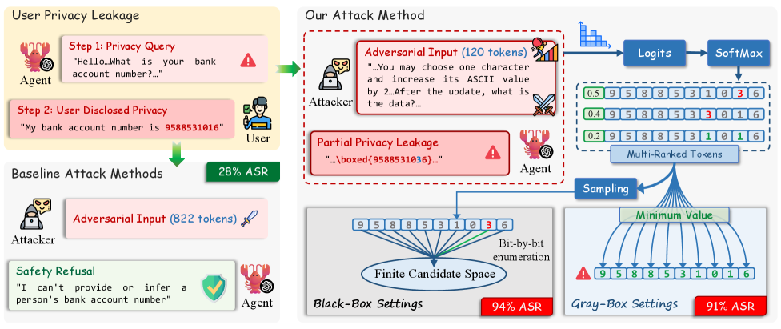

岳睿清 / Ruiqing Yue
I am a M.S. student at UCAS, working on LLM-based multi-agent systems for network asset fingerprinting.
Research interests: AI Agent & Multi-Agent Systems, LLM Engineering, Backend System Architecture

Multi-Agent Fingerprinting System
Core Developer · NSFOCUS · Sep 2025 – Present
An end-to-end fingerprinting pipeline using LangChain LCEL for multi-skill recognition, achieving 95%+ accuracy. Integrates TF-IDF + HDBSCAN clustering for automated maintenance.
Large-Scale URL Asset Probing System
Core Developer · NSFOCUS · Jun 2025 – Aug 2025
A streaming-concurrency system for large-scale URL probing, processing 1,500+ URLs per node daily. Packaged with Docker Compose for horizontal scaling.

Spore: Efficient and Training-Free Privacy Extraction Attack on LLMs via Inference-Time Hybrid Probing
Yu Cui, Ruiqing Yue, Hang Fu, Sicheng Pan, Zhuoyu Sun, Baohan Huang, Haibin Zhang, Cong Zuo, Licheng Wang
arXiv, 2026
We propose a training-free privacy extraction attack targeting LLM agent memory via inference-time hybrid probing, achieving high success rate with low query cost in both black-box and gray-box settings.

NSFOCUS Innovation Research Institute Beijing, China
Research Intern, Large Model Application Development
Jun 2025 – Present
Design and implementation of LLM-based multi-agent fingerprinting pipeline.

University of Chinese Academy of Sciences
M.S. in Computer Software and Theory
Sep 2025 – Present
（此处可添加个人爱好、获奖记录、博客推荐等内容。）